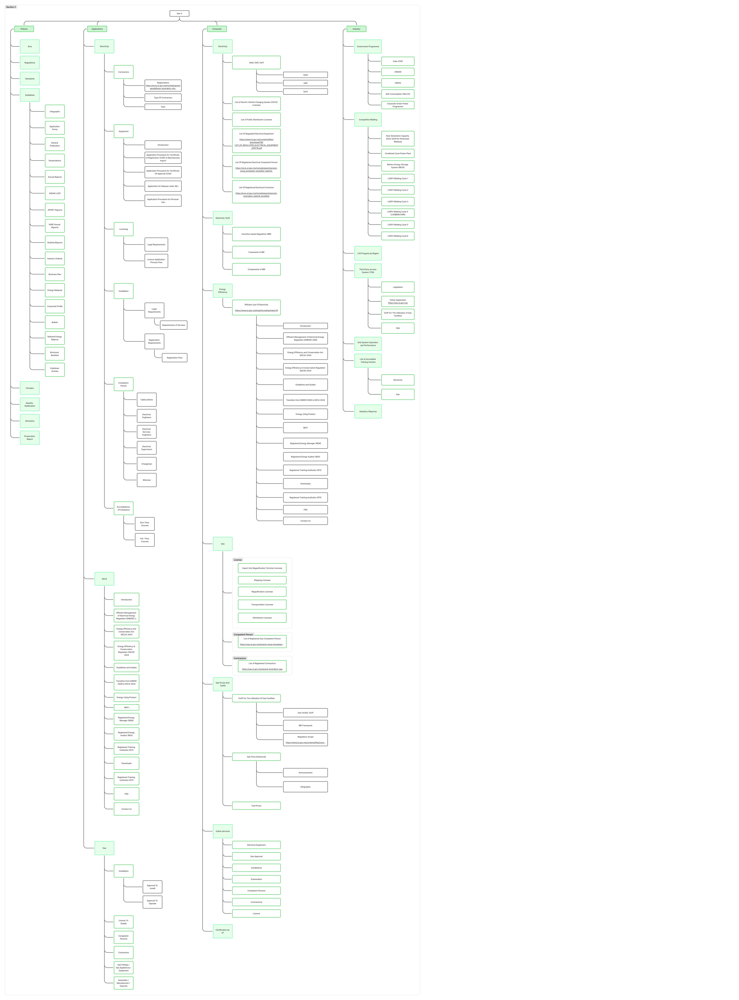

02
Problem / Missing structure
The content existed. The path didn't.
01
4 navigation systems running on one site
02
Deep hover menus with walls of text
03
Important pages buried several layers deep
04
Content grouped by department, not user need
05
Links that looked like body text
06
Duplicate entry points to the same content
07
Staff manually guiding users to the right page
The problem wasn't missing content. It was missing structure — and 15 years of additions had buried it deeper with every update.

Visual 02
Full-bleed old IA map — overwhelming scale

Visual 03
Cropped branch detail — deep nesting
This single branch in the IA tree held 40+ child nodes — most duplicating content found elsewhere on the site. Users had no way to know which path was canonical.
Explore full IA board in FigJam